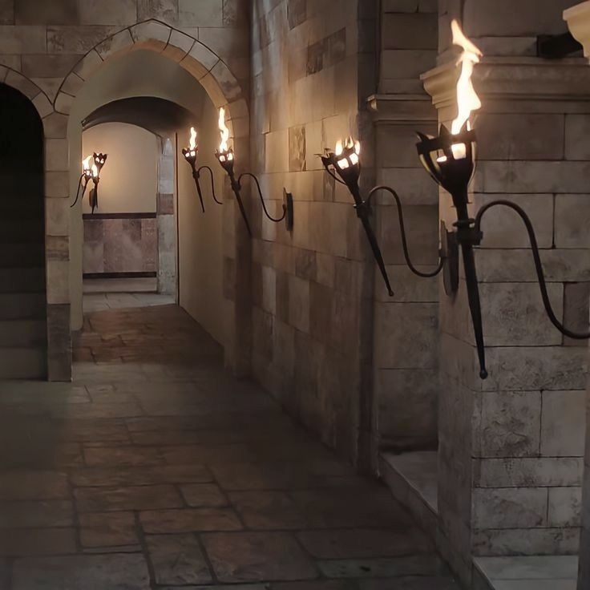
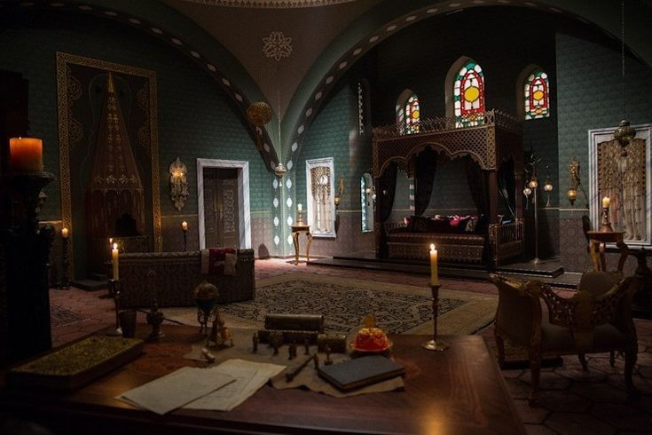
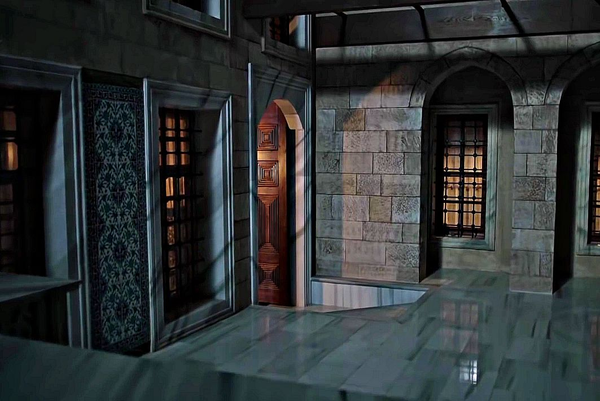
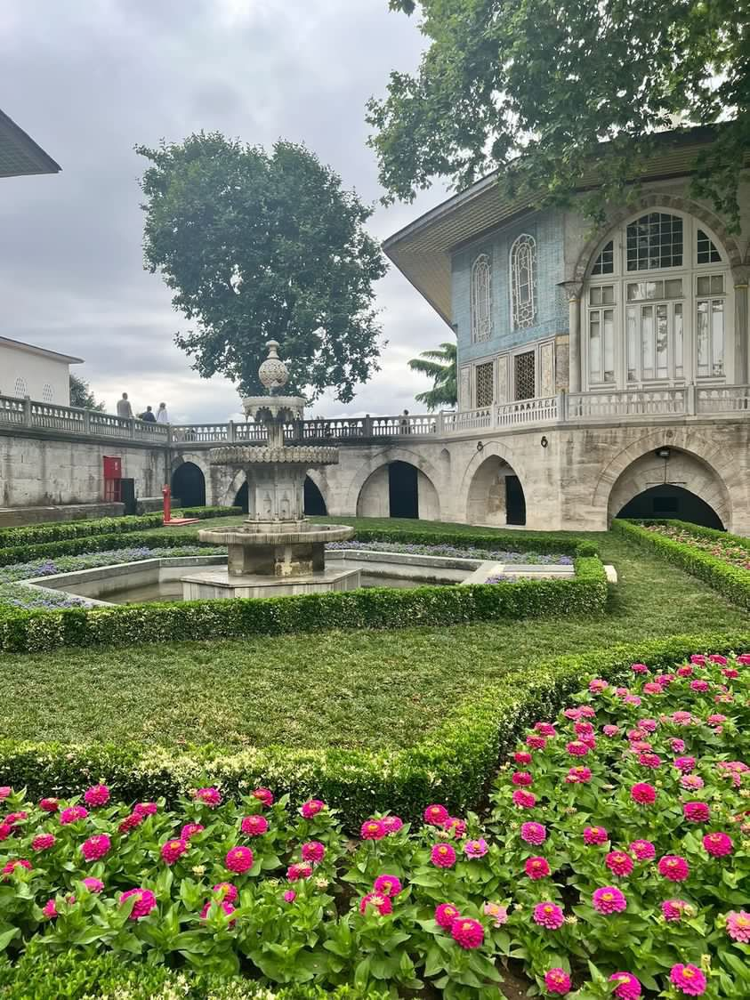
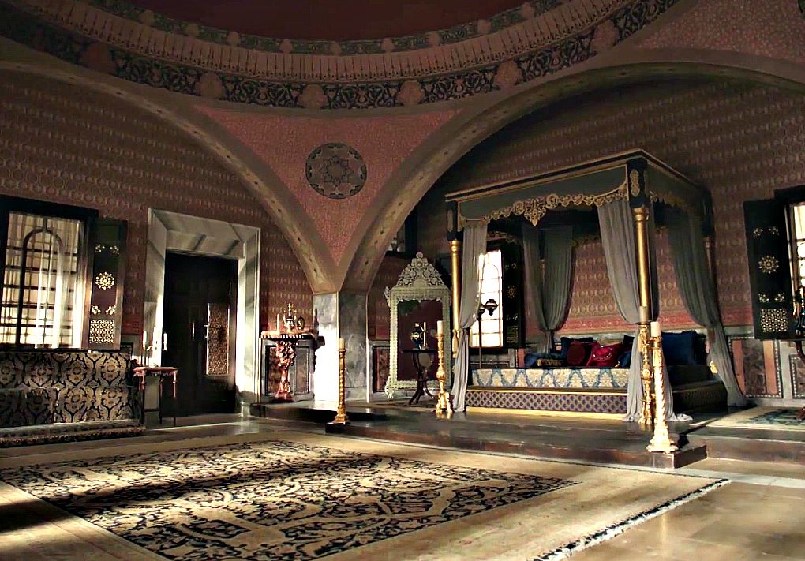

Only Haikyuu · Ottoman dynasty
Topkapı
Palace
Un palacio dorado y letal. El favor del sultán puede elevar a una casa o condenarla al olvido; las alianzas se susurran, las rivalidades se heredan y ninguna sonrisa está libre de intención.
Entrar al palacio
Una corte de secretos
Detrás de las puertas doradas
En Topkapı, el linaje abre puertas, el rango determina obligaciones y la cercanía al poder puede convertirse en protección o peligro.
Este registro reúne a la casa imperial, los dignatarios, las casas nobles y quienes sirven dentro del palacio. Cada puesto vacante conserva su descripción hasta que alguien lo ocupe.
La Casa Miya
Dinastía Imperial
La familia del sultán es el centro de la corte; la sucesión permanece abierta: la edad y el rango no convierten por sí solos a ningún príncipe en heredero.
Dîvân-ı Hümâyun
Gobierno imperial
El consejo imperial reúne los oficios que sostienen la administración del Estado. Cada cargo indica quién lo ocupa o si permanece vacante.
Harem-i Hümâyun
Harén imperial
La casa interior reúne a las sultanas imperiales, consortes, ikbal, cariyes y servidoras del palacio. Los rangos y vínculos se presentan conforme a las fichas registradas.
Hizmet-i Saray
Administración imperial
Los oficios del palacio aseguran el servicio de las residencias, la seguridad de sus dependencias y el cumplimiento del protocolo. Los puestos vacantes están disponibles para futuras incorporaciones al rol.
Ümerâ ve Eşraf
Nobleza y casas
Las casas nobles reúnen a sus titulares, cónyuges y descendientes. El rango de una persona no concede automáticamente un cargo de gobierno.
Memoria del Imperio
La galería
Retratos y escenas que guardan la memoria de la corte.



